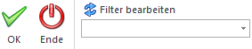

Im Menüpunkt…
1 WinLine FAKT
1 Erfassen
1 Belegdruck
1 Sammelfaktura
… können alle Lieferscheine, die im Bearbeitungscode der Belegstufe "Faktura" das Kennzeichen "S" führen, pro Hauptkonto zu einer Sammelfaktura zusammengeführt werden. Ebenso können Aufträge, zu denen es keine Lieferscheine geben sollte (Bearbeitungscode der Belegstufe "Lieferschein" mit Kennzeichen "N"), zu Sammelfakturen zusammengefasst werden. Dies ist jedoch nur möglich, wenn als Sammelmethode entweder "alle Zeilen drucken" oder "eine Summenzeile pro Beleg" verwendet wird.
Achtung
Die Lieferscheine / Aufträge werden zunächst immer anhand des Hauptkontos zusammengefasst. D.h. wird als "Hauptkonto für Belege" (Einstellung in den FAKT-Parametern) die Lieferadresse angegeben, so erfolgt das Zusammenfassen von Belegen auf Grundlage dieser Kontonummer!
Innerhalb des Kontos werden dann einzelne Sammelfakturen pro Fremdwährung, Brutto-/Netto-Kennzeichen der Preisliste, Druckstatus des Lieferscheins (* und D getrennt von N) und Summenrabatt gebildet. Es handelt sich hierbei um die sogenannte "Standardgruppierung". Mit Hilfe des Bereichs "Optionen" (siehe Register "Belegdruck") kann die Sortierung und Gruppierung beeinflusst werden.
Hinweis
Der Druckstatus kann über die folgenden Wege so beeinfluss werden, dass der Beleg in eine Sammelfaktura mündet:
ü Manuelle Eingabe des Belegabarbeitungscodes in der Belegerfassung. In der Faktura muss als Belegabarbeitungscode ein "S" eingetragen werden.
ü Es wird eine eigene Belegart mit dem Belegabarbeitungscode "S" bei der Faktura angelegt.

Das Fenster unterteilt sich in die folgenden Register, welche in den nachfolgenden Kapiteln beschrieben werden:
ü Register "Belegdruck"
In dem
Register "Belegdruck" können Selektionen und Einstellungen für den Druck der
Sammelfakturen vorgenommen werden.
ü Register "Selektion"
In dem
Register "Selektion" kann eine manuelle Selektion erfolgen, ob und welche
Lieferscheine / Aufträge in einen Sammelfaktura überführt werden sollen.
Buttons

Ø Ok
Durch Anwahl des Buttons "Ok" bzw. der Taste F5 werden die Sammelfakturen, entsprechend der vorgenommen manuellen Selektion, gedruckt. Wurden das Register "Selektion" im Vorfeld nicht angewählt, so erfolgt eine Abfrage, ob der Druck trotzdem vorgenommen werden soll (auf Grundlage des Registers "Belegdruck").
Hinweis 1
Wenn im Personenkontenstamm, im Register "FAKT" die Option "e-Billing" auf "XML-Exportvorlage" gestellt wird, dann wird bei der Sammelrechnung kein Originaldruck durchgeführt. Dies wird im Protokoll auch entsprechend ausgewiesen.
Hinweis 2
Wurden bei mehreren Belegen, die zu einer Sammelfaktura zusammengefasst werden sollen, XML-Erweiterungen hinterlegt, so wird nur die XML-Erweiterung des ersten Belegs in die Sammelfaktura übernommen!
Hinweis 3
Das Programm "Sammelfakturendruck" kann generell von mehreren Benutzern geöffnet werden. Es wird erst beim Drücken des Buttons "Ok" ein entsprechendes Lock gesetzt. Damit ist es z.B. möglich, dass sich ein Benutzer eine Sammelfakturen-Vorschau ansieht und ein zweiter Benutzer Sammelfakturen druckt. Sobald allerdings beide Benutzer gleichzeitig den Button "Ok" drücken, dann kann nur ein Benutzer Sammelfakturen drucken und der zweite Benutzer bekommt eine Lockmeldung.
Beim Erstellen der Sammelfaktura wird auch ein Lock auf den bzw. die Lieferschein(e) abgesetzt. Wenn ein Lieferschein nicht gelockt werden kann, weil z.B. ein anderer Mitarbeiter diesen Lieferschein gerade bearbeitet, so wird das Erstellen der Sammelfaktura abgebrochen und eine entsprechende Meldung im Sammelfakturendruck-Protokoll ausgegeben.
Ø Ende
Durch Drücken des Buttons "Ende" bzw. der Taste ESC wird das Fenster geschlossen und keine Sammelfakturen erstellt.
Ø Filter bearbeiten
Durch Anklicken des Buttons "Filter bearbeiten" kann die Selektion von Belegen nach frei definierbaren Kriterien eingeschränkt werden.
Achtung
Die Sortierung für Sammelfakturen erfolgt ausschließlich mit Hilfe der Option "Optionen - Sortierung" bzw. kann über die Option "Optionen - Gruppierung" beeinflusst werden.